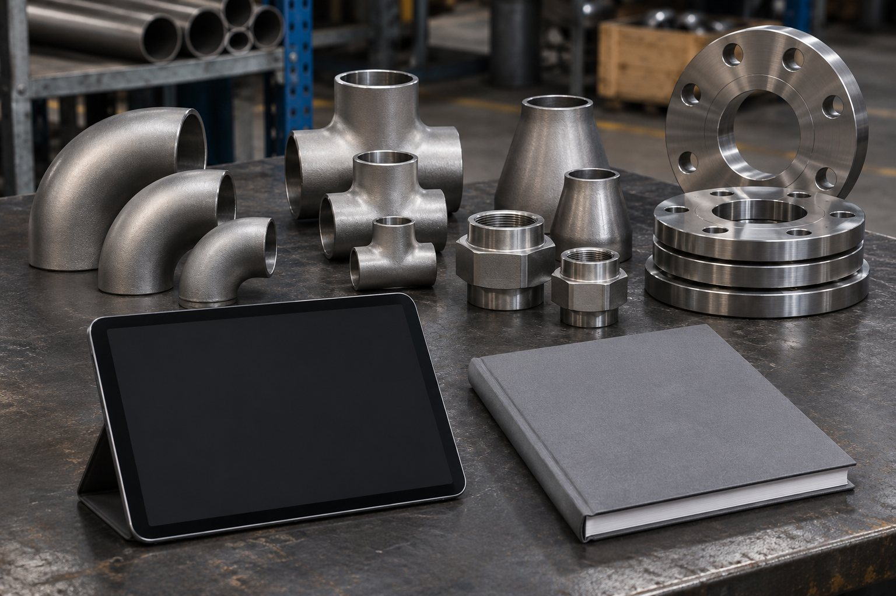
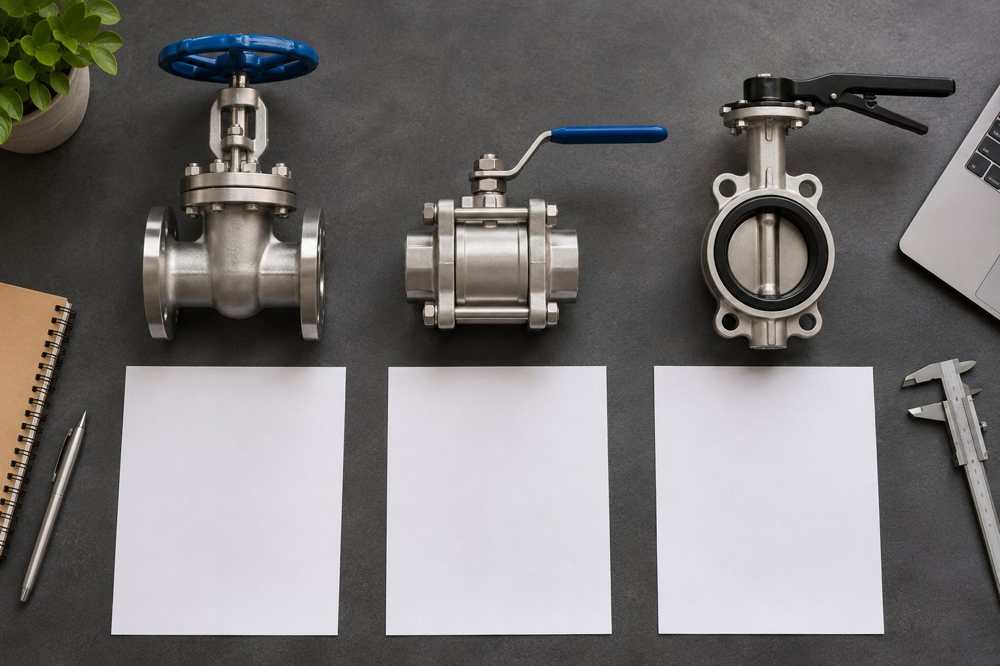

Поставки промышленной арматуры / кейс-концепт
От запроса до понятного предложения
Собрать закупки, предложения и заявки в систему.

Задача
У условного поставщика арматуры заявки приходят по разным каналам. Состав предложения приходится собирать вручную, а причины проигранных тендеров не записываются. Нужно связать разбор прошлых заявок, проверку закупки и работу менеджера с единым каталогом.
Что сделали

Разбираем тендеры
Изучаем требования и документированные причины отклонений.
Проверяем закупку
Сопоставляем документы поставщиков и структуру себестоимости.
Настраиваем CRM
Фиксируем этапы заявки, ответственных и обязательные поля.
Собираем каталог
Структурируем номенклатуру и передаём сайт с инструкцией.
Связанный путь заявки
Рабочее место менеджера: заявка и сведения о товаре.
Разбор тендеров, выводы по поставщикам и себестоимости, настроенная CRM и сайт-каталог. Интеграции и перенос данных фиксируются в согласованном объёме.
Материалы пакета / примеры
Условные фрагменты, не сведения о реальной закупке.
Разбор тендера
Требование: подтвердить характеристику позиции паспортом. Наблюдение примера: в пакете нет нужного листа. Действие: запросить подтверждение до подачи; отклонение не приписываем без протокола.
Поставщик и себестоимость
| Закупочная стоимость, пример | 10 000 ₽ |
| Доставка | 800 ₽ |
| Упаковка | 200 ₽ |
| Прямые затраты* | 11 000 ₽ |
*Пример до налогов, хранения и финансовых расходов. Состав затрат и документы требуют проверки.
CRM
Запрос № 001 / пример. Позиция: запорная арматура. Этап: уточнение параметров. Следующее действие: получить спецификацию. Причина закрытия обязательна для завершённых заявок.
Сайт-каталог
Карточка позиции: тип арматуры, материал, условный проход, давление, присоединение. Действие: запросить подбор по спецификации. Неподтверждённые характеристики не публикуются.
Маршрут заявки / пример
Демонстрационный фрагмент, не рабочая документация.
| Этап | Что остаётся в системе |
|---|---|
| Запрос получен | Позиции, количество, срок |
| Подбор | Характеристики и допустимые замены |
| Проверка закупки | Поставщик и калькуляция |
| Предложение | Версия КП и дата ответа |
| Результат | Решение заказчика и причина |
Карточка заявки / пример
Позиция: запорная арматура. Характеристики и срок уточняются. Ответственный назначается в CRM.
Этапы и срок
3–4 недели
- Неделя 1 · тендеры и закупка
- Недели 2–3 · CRM и каталог
- Неделя 4 · проверка и передача
Ориентир по стоимости
190 000 ₽
Результат пакета — инструменты и материалы для работы. Победа в тендере и рост продаж не обещаются.
Итоговый состав, срок и стоимость фиксируем после разбора исходных данных.